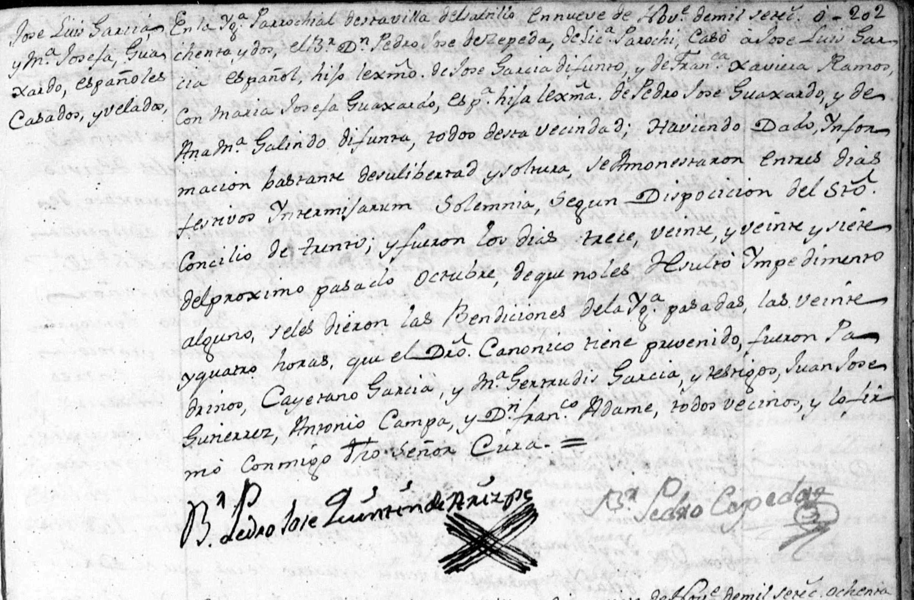

← Volver al Archivo Central
Expediente Histórico: 1782 MR LuisGarcia Josefa Guajardo 1

Manuscrito Original (Clic para ampliar)
Transcripción Paleográfica
Perfil: Luis Garcia y Maria Josefa Guajardo
Descripción: Acta de matrimonio de Luis Garcia y Maria Josefa Guajardo, fechada el 14 de octubre de 1782 en la Iglesia Parroquial del Valle del Guaxuco.
Transcripción:
Luis Garcia con Josefa Guaxardo
En esta Iglecia Parrl del Valle del Guaxuco en catorse de Octubre de mil setecientos ochenta y dos, Habiendo precedido las diligencias del Sto Concilio de Trento y tres amonestaciones que se hicieron en tres dias festibos y no resultando impedimento, Yo fr. Josef Sanchez casé y velé in facie eclesie a Luis Garcia español originario de la villa de Santiago del Saltillo y vezino de esta jurisdicion, hijo lex de D.n Man.l Garcia, y de D.a Phelipa Escovedo; Con Maria Josefa Guaxardo, española originaria y vecina de esta expresada Jurisdiccion; hija lex de D.n Xptobal Guaxardo y de D.a Franca Guerra. Fueron Padrinos... [texto continúa en la siguiente página]